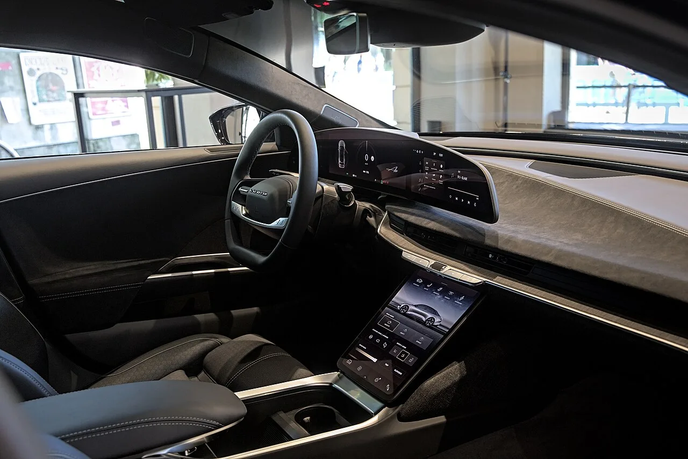
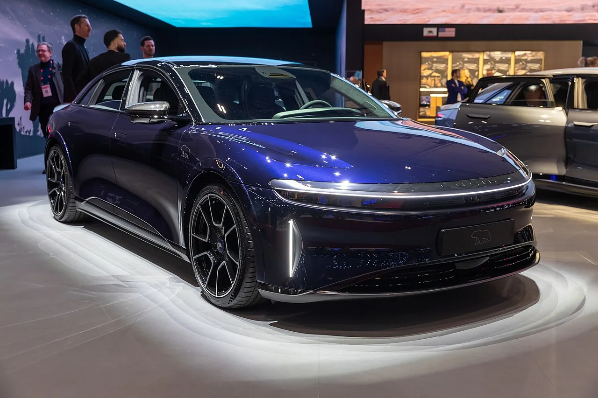

▲ 루시드 에어. 이번 리콜 대상은 2022~2026년형 2만 7185대다
리콜 통지문에 "실외에 주차하라"는 문장이 들어가면, 사안의 성격이 달라집니다.
루시드가 에어 세단 2만 7185대를 리콜합니다. 외부 조명 회로의 전기적 보호 기능에 결함이 있어, 구형 소프트웨어가 설치된 차량에서 회로가 연기나 화재를 일으킬 만큼 뜨거워질 수 있다는 것이 이유입니다.
1. 문제는 전구가 아니라 퓨즈였습니다
원인은 불량 전구나 지나치게 밝은 LED가 아닙니다. 루시드는 전자 퓨즈(eFuse)를 제어하는 소프트웨어가 외부 조명 회로에 과전류가 흐르는 동안에도 전원을 유지하도록 놔둘 수 있다고 밝혔습니다.
퓨즈의 존재 이유는 단순합니다. 정해진 전류를 넘으면 회로를 끊는 것입니다. 그 판단을 소프트웨어가 하는 구조에서, 판단 기준이 잘못 잡혀 있었던 셈입니다.
📍 eFuse란
기존 퓨즈는 금속이 녹아 끊어지는 물리적 부품입니다. 한 번 끊기면 교체해야 합니다.
전자 퓨즈는 전류를 측정해 반도체 스위치로 회로를 차단합니다. 임계값을 소프트웨어로 정할 수 있어 유연하지만, 그 임계값 설정이 곧 안전 설계가 됩니다. 이번 리콜이 소프트웨어 업데이트로 해결되는 이유이기도 합니다.
2. 위험은 화재만이 아닙니다
같은 과열 문제가 두 갈래 위험을 만듭니다.
| 구분 | 내용 |
|---|---|
| 1차 | 회로 과열 → 연기 또는 화재 |
| 2차 | 중앙 제동등(CHMSL) 또는 전방 조명 소실 → 시인성 저하, 충돌 위험 증가 |
불이 나지 않았다고 안전한 것은 아니라는 뜻입니다. 뒤차가 볼 브레이크등이 꺼지는 상황도 같은 결함에서 나옵니다.

▲ 소프트웨어가 하드웨어의 안전 장치를 대신하는 구조에서는 코드 한 줄이 안전 설계가 된다 ⓒ Wikimedia Commons
3. 리콜 이전의 신호들
징후는 이미 쌓여 있었습니다. 루시드의 리콜 신고서에는 3년에 걸쳐 전방 조명과 관련된 화재 3건, 그리고 중앙 제동등 회로 과열과 연관된 연기 발생 4건이 기록돼 있습니다.
여기에 해당 램프의 배선 하네스 손상과 관련됐을 수 있는 보증 신고 33건도 확인됐습니다.
| 유형 | 건수 |
|---|---|
| 전방 조명 관련 화재 | 3건 (3년간) |
| 중앙 제동등 회로 연기 | 4건 |
| 배선 하네스 손상 보증 신고 | 33건 |
4. 정비소에 갈 필요는 없습니다
다행히 조치는 무선으로 끝납니다. 루시드는 지난 7월 소프트웨어 버전 2.10.0을 무선(OTA)으로 배포했습니다.
이 업데이트는 eFuse의 보호 임계값을 낮추고, 결함이 발생한 회로가 같은 키 사이클 안에서 반복적으로 다시 전원을 공급받지 않도록 막습니다.
보고서 작성 시점 기준으로 2만 719대가 이미 2.10.0 이상을 받았고, 6466대가 아직 남아 있었습니다.

▲ 조치는 무선 업데이트로 끝나지만, 받지 않은 차량은 여전히 대상이다 ⓒ Wikimedia Commons
5. 그래서 실외 주차 권고가 나왔습니다
업데이트를 받지 않은 소유자에게는 우편으로 안내가 발송되며, 공식 시정 통지는 10월 16일로 예정돼 있습니다. 그리고 업데이트가 설치되기 전까지 건물에서 떨어진 실외에 주차하라는 권고가 붙었습니다.
전기차 오너에게는 간단한 요구가 아닙니다. 정기적으로 충전기에 연결해야 하는 차종에서, 실내 주차장을 피하라는 권고는 일상 동선 자체를 바꾸라는 말에 가깝습니다.
6. 루시드에게 이어지는 부담
루시드는 최근 품질과 안전 측면에서 좋은 흐름을 타지 못하고 있습니다. 결함이 반복된 에어 한 대를 유튜버 제이슨 펜스케에게서 재매입한 일이 있었고, 하프샤프트 볼트 체결 불량으로 리콜을 진행했으며, 주행 중 동력 상실 우려로 세단 수천 대를 다시 불러들이기도 했습니다.
이번 건은 소프트웨어로 해결된다는 점에서 부담이 덜한 편입니다. 다만 화재 위험과 실외 주차 권고라는 두 단어가 함께 붙은 리콜은 브랜드 신뢰 측면에서 가볍게 넘어가기 어렵습니다.

▲ 루시드는 에어에 이어 그래비티로 라인업을 넓히는 중이다. 품질 신뢰가 그만큼 중요해졌다 ⓒ Wikimedia Commons